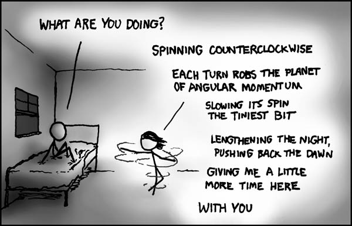

How deeply do you think about everyday things, like bread? The bread on that sandwich you're eating (sandwiches were invented by the earl of sandwich when he wanted a snack easily accessible while playing cards) has been grown and harvested as grain, then made into dough, baked, shipped to your supermarket, bought by you or your parents, and finally used as sandwich bread. How often do you think about things like that?
The bread on that sandwich you're eating has been grown and harvested as grain, then made into dough, baked, shipped to your supermarket, bought by you or your parents, and finally used as sandwich bread.
How did you know I was eating a sandwich?!

Non-snarky response: Good to see you have a global attitude about some issues. But this isn't that deep. "Bread comes from farmers". Okay then. So does just about everything else in the supermarket. The fact that it seems amazing really says something about how disconnected we are from the food growing process. And that's sad, really.
Yeah, well, that's the best example I could come up with at the time. Now that I think about it, it wasn't a very good one. I guess the point is that we take too many things for granted. Like computers and video games. People used to play card and board games for entertainment. We should put ourselves in their shoes, ant see how many things we take for granted then.
I guess the point is that we take too many things for granted. Like computers and video games. People used to play card and board games for entertainment. We should put ourselves in their shoes, ant see how many things we take for granted then.
... says Mr. Boktai fanboy.

As for me: I really do not inquire too much about these issues unless it intrigues me as to what went into making a particular product or item.
Like most people, I don't usually think too much about most everyday things, but I consider myself well-informed about them because if I'm interested in something I research it A LOT.
@Django: But then we will take board games for granted! Oh no! When will the horror end?
Also, many people still play card and board games. In fact, I believe the most popular on-line computer game is *GASP* none other than the Internet Checkers game that comes with Windows XP.
I usually think about why certain products are the way the are, or how the heck they manage to get them like that, rather than where they come from (especially since I generally already know the latter). Like those icy poles with 6 layers of different colours. I assume they freeze one layer, then quickly put it in the next layer and freeze that before the first one melts. And why is it cheaper to buy two 2L bottles of juice than one 4L bottle at my supermarket? It defies reason. The 2L ones use more packaging and take more space to transport per litre of juice. Surely this should make it more expensive?
Also, many people still play card and board games. In fact, I believe the most popular on-line computer game is *GASP* none other than the Internet Checkers game that comes with Windows XP.
I usually think about why certain products are the way the are, or how the heck they manage to get them like that, rather than where they come from (especially since I generally already know the latter). Like those icy poles with 6 layers of different colours. I assume they freeze one layer, then quickly put it in the next layer and freeze that before the first one melts. And why is it cheaper to buy two 2L bottles of juice than one 4L bottle at my supermarket? It defies reason. The 2L ones use more packaging and take more space to transport per litre of juice. Surely this should make it more expensive?
I understand the origins of everyday things, but do not dwell on the subject. I have better things to do.
Ah yes, but why is this bread here? We must then find it's purpose and roll in our lives. Is it our purpose to eat that bread because it has been given to us, or is it the breads sole purpose to exist to give us nourishment? Take the rain. Is it here because plants and animals need water? Or could plants just be here because it rains? Does anything give a whoop about anything or is it all done according to our own needs as living beings? Oooooh. [/Sophie's World]
I still don't see how sending electricity sizzling through a piece of metal can create Soldat.
I still don't see how sending electricity sizzling through a piece of metal can create Soldat.I'm kicking loads of stuff out my sig so that I can fit that in... awesome.
I take most stuff for granted, mostly because if I didn't then there would be too much to think about. Now and then, though, it is certainly worth leaning back and going '...wow...'.
Very, very deeply... pretty much all I can say without starting to feel dark and depressed about everything. End of the line.
As Iangb said, its good once and awhile to take a step back and take a gander. I think that if one person were able to comprehend the true depths of everyday things, such as your car (all the rubber, assorted metal alloys, people who built it, people who invented cars, innovators, the upholstery, the electronics, all from separate places, different people who go into the making) ones mind would simple overload, and you would stop being able to do everyday tasks.
not very much, i generally know where stuff comes from and how it works, i just dont care enough to think about it real deeply, id rather just eat my sandwich while wondering "did i put enough peanut butter on this?" then where the bread came from (which it could have been from my family, we farm)
I don't think about it much.
i think deeply, but not like that. i think more along the lines of "whats the point" or "why is this happening". like, for example, if im doing something like riding my bike, i thing "why am i doing this. It will do nothing to anyone appart from make me tired and frustrated" then i think "infact, everything i do in this world will do nothing but cause myself pain, and force me to endure hardship, for apsolutly nothing, as it won't make a difference to anything". which makes me think "my life is just a big waste of time. why should i bother carrying on. i have nothing to look forward to, as everything, amounts to nothing, therefore, life is nothing"
and that is how i think
and that is how i think
^Talk about being an emo.
i cant help it if i get depressed
I think about a variety of things about the creation and existence of everyday objects, when I'm in the mood. I think I particularly think about science. It makes me annoyed to think that some people don't make an attempt to perceive how the world is really just a ridiculous amount of atoms, packed together in predetermined shapes by what? An omnipotent entity or randomness? It's safe to say I think about a lot.
I could go into more, but I don't really think that that's the purpose of the thread.
I could go into more, but I don't really think that that's the purpose of the thread.
Sometime I think about the universe, and how there is supposedly nothing outside of it. For some reason that makes me really nervous. 
Some magazine said that albert einstein lied about the universe being existed.
So why don,t you read it?
So why don,t you read it?
sometimes i think "why am i me? why am i not someone else. Why was my conscousnous put in this body, and given this life". but then, thats just building on what i said earlier ^
Some magazine said that albert einstein lied about the universe being existed.
So why don,t you read it?
I said "supposedly", and it still makes me nervous. And why would good ol' Einstien lie? What did he have to gain?
@Limer: *clone*
sometimes i think "why am i me? why am i not someone else. Why was my conscousnous put in this body, and given this life". but then, thats just building on what i said earlier ^
Yeah, why weren't you and a starving child in a third-world country replaced?
"why am i me? why am i not someone else. Why was my conscousnous put in this body, and given this life".That one's easy. if you were someone else, then you wouldn't know it, so you would still ask the same question. As to why... no reason. It's more of your body and your life defining who you are, rather than the other way around.
Very deeply. I go way deep.
*takes a peek*
What the heck is that??...
What the heck is that??...
Oooooh. [/Sophie's World]
That is a great book.
sometimes I think about how things are made; how people came up with it. except computers. I mean, how do millions of little silicon "gates" make a computer?
I want to read Sophies World. I've seen so many references to it of late, but never even heard of it before.
Hmm. Time to Google.
Hmm. Time to Google.
Many a time, I've thought about what it means to think about things on this level. I have decided that it's meaningless, and mostly a waste of time. I could entertain myself more in plenty of other ways.
But go ahead, feel free to think you're whimsical.
But go ahead, feel free to think you're whimsical.
After reading throught this thread I guess that it has changed my life as I now will think (if i'm bored) how did this computer get here to let me access this internet site? Well first all the elements that are inside of it are amde from the earth and the someone had to invent all of the seperate pieces and then some had to inventthe computer and the progamme it..... etc so I guess that can go pretty deep at times.
I thought about pencils today in study hall.
Kablizzy: The thing about life, man... is... now stay with me, man... the thing about life... is that we eventually die, man. Life... is the leading cause of death, man... WHOOOOOA.
Dave: Trippy, man.
Dave: Everything is in balance, though. Take this bag of Funyuns. For each Funyun... somewhere out there... there's a Responsibilityun.
Dave: Trippy, man.
Dave: Everything is in balance, though. Take this bag of Funyuns. For each Funyun... somewhere out there... there's a Responsibilityun.
Trippy, indeed. That is just the kind of thing Dave would say.
And @greengooguy: That's true. And too go even deeper, To move that computer to your house, many molecules were displaced...
And @greengooguy: That's true. And too go even deeper, To move that computer to your house, many molecules were displaced...
I used to think deep about everything. Still do sometimes, until I come to a realization that makes my life seem meaningless, then I go play N.
Ignorance is bliss.
Ignorance is bliss.
Back in high school, one of my friends (positively brilliant and proper; quite scarily the stereotypical British scholar) developed this theory that matter is never in motion, but is instead constantly making quantum leaps. Kinetic Energy was not "movement" as we thought of it, and instead determined the frequency with which the matter made quantum leaps. The direction it would go could be determined by a sort of space-energy field, quite similar to gravity. I don't remember how he justified the rest, but it was quite solid. It was rather like a religion, come to think of it, in that it required blind faith, and could explain the rest through its own postulations.
Trippy, indeed. That is just the kind of thing Dave would say.
And @greengooguy: That's true. And too go even deeper, To move that computer to your house, many molecules were displaced...
OK now this stuff is starting to freak me out!
And someone had to pacage it then send it to a shop awhere I bought the computer. Man.... This computer has been through heaps!
What if it was foreign? Think of all the poor atoms!! AHHH im displacing them right at my fingertips! Cant... ... stop... ...displacing...
You know, my gravitational field affects the position of stars on the opposite side of the universe. Very minutely, but still...
You know, my gravitational field affects the position of stars on the opposite side of the universe. Very minutely, but still...
Omg imagine how minutely! And that every movement that you make moves it a little more.

Aww.
And people think physics isn't romantic.
And people think physics isn't romantic.
Back in high school, one of my friends (positively brilliant and proper; quite scarily the stereotypical British scholar) developed this theory that matter is never in motion, but is instead constantly making quantum leaps. Kinetic Energy was not "movement" as we thought of it, and instead determined the frequency with which the matter made quantum leaps. The direction it would go could be determined by a sort of space-energy field, quite similar to gravity. I don't remember how he justified the rest, but it was quite solid. It was rather like a religion, come to think of it, in that it required blind faith, and could explain the rest through its own postulations.
That's really interesting. I was going to ask why kinetic energy and movement doesn't just make more sense, but I've stopped myself. It really doesn't. Quite an amazing piece of science, there.
Meh, i used to think deeply about everything. It was more thinking about mental things though, the reasons other people had for decisions, and about how people interacted, how easily people were manipulated etc. I've just about stopped though, thanks to a scarily enlightening event that lasted under a minute in which i almost went insane 
It started out innocently enough, i saw something funny happen when i was alone, and thought about how a friend of mine would enjoy me telling him about it. Then i realised he would probably get a giggle out of me thinking about telling him and how it ran through my mind, then i realised he would laugh at me realising that, and next thing i knew all these thinking about... thinking about.... thinking about etc were stacking up ontop of each other, until i started yelling at myself, first in my head then out loud to stop. Then i stopped, and realised.... yeah, you guessed it, that he would want to hear about my temporary insanity. So then i started yelling at myself again, and ran home crying.
Also, i have to say that romantic physics comic is really cute
It started out innocently enough, i saw something funny happen when i was alone, and thought about how a friend of mine would enjoy me telling him about it. Then i realised he would probably get a giggle out of me thinking about telling him and how it ran through my mind, then i realised he would laugh at me realising that, and next thing i knew all these thinking about... thinking about.... thinking about etc were stacking up ontop of each other, until i started yelling at myself, first in my head then out loud to stop. Then i stopped, and realised.... yeah, you guessed it, that he would want to hear about my temporary insanity. So then i started yelling at myself again, and ran home crying.
Also, i have to say that romantic physics comic is really cute
I don't really think very deeply about things, except when it's very important.
Like, I don't really think about how many pockets my new pants have. Was it 4?
Like, I don't really think about how many pockets my new pants have. Was it 4?
I don't really think very deeply about things, except when it's very important.
Like, I don't really think about how many pockets my new pants have. Was it 4?
Have you considered the nature of a pocket, and how much of it arose from utility versus greed?